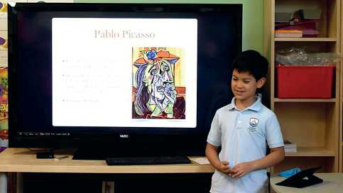
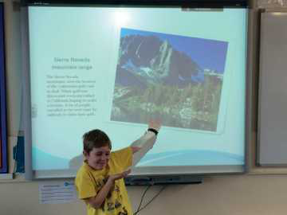

TEMATIKA 6: MEDIET2. Dita dhe Dielli prezantojnë projektin
Puno në shtëpi
Ndihmë: si të punoj?
Mund ta tregosh me fjalë, me zë, me lëvizje ose me vizatim, si të vijë më lehtë. Kërko ndihmën e një shoku, një shoqeje ose të një të rrituri kur të duhet.
1.
Me ndihmën e prindërve, krijo një punim tëndin në kompjuter.
Mund të zgjedhësh një temë që të pëlqen dhe mund të bashkëngjitësh edhe figura. Prezantoje atë para klasës dhe trego se si e realizove atë.

